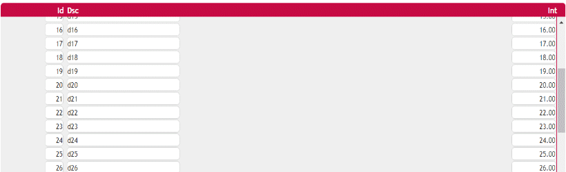

It is possible for a grid in Web environments to set a fixed header. Its purpose is to enable scrolling of the whole grid keeping the column headers visible at any time. To use it you need to:
The grid header will be fixed and you will be able to scroll through your data as details the following image:  AvailabilityThis options is available since GeneXus 15 Upgrade 6. |